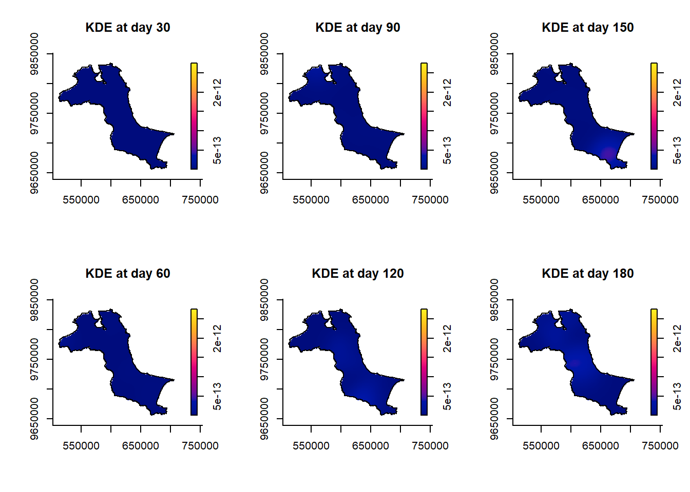
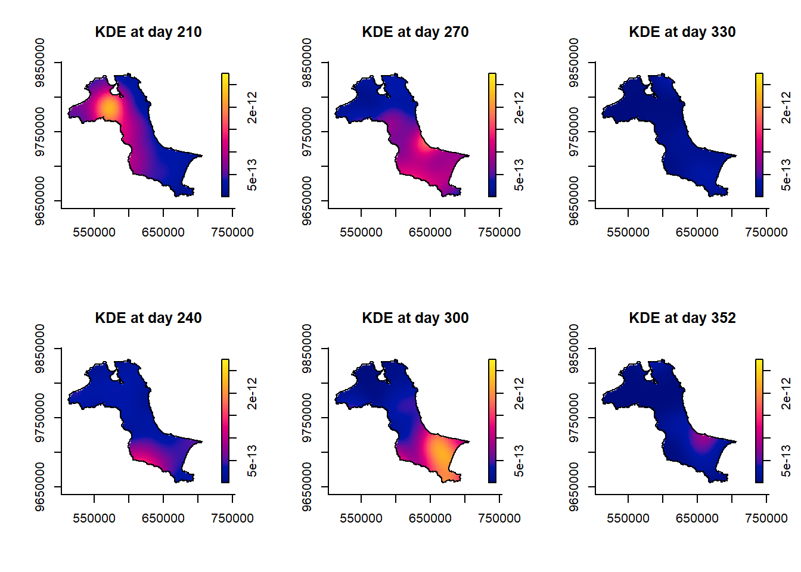
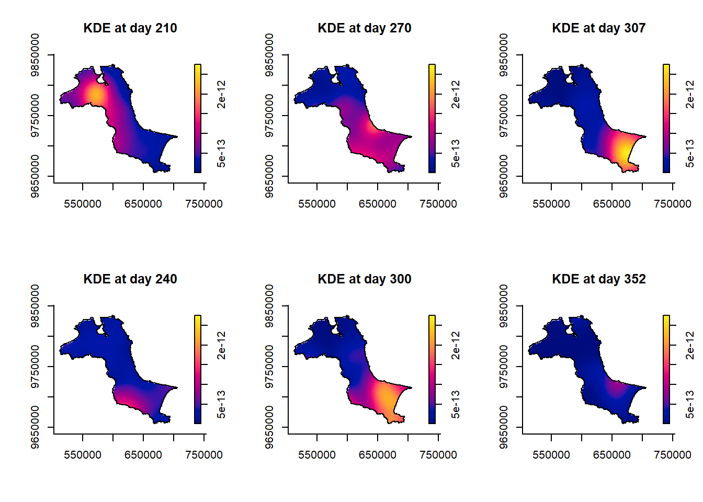

pacman::p_load(sf, raster, spatstat, sparr, tmap, tidyverse)In Class Exercise 4
Loading Packages
Import and Prepare Study Area
kbb_sf <- st_read(dsn="data/rawdata",
layer="Kepulauan_Bangka_Belitung") |>
st_union() |>
st_zm(drop=TRUE, what="ZM") |>
st_transform(crs=32748)Reading layer `Kepulauan_Bangka_Belitung' from data source
`C:\Users\Home\Desktop\bjyeo\IS415-GeospatialAnalytics\InClassEx\ICE04\data\rawdata'
using driver `ESRI Shapefile'
Simple feature collection with 298 features and 27 fields
Geometry type: POLYGON
Dimension: XYZ
Bounding box: xmin: 105.1085 ymin: -3.116593 xmax: 106.8488 ymax: -1.501603
z_range: zmin: 0 zmax: 0
Geodetic CRS: WGS 84st_as_s2(): dropping Z and/or M coordinatekbb_owin <- as.owin(kbb_sf)
kbb_owinwindow: polygonal boundary
enclosing rectangle: [512066.8, 705559.4] x [9655398, 9834006] unitsclass(kbb_owin)[1] "owin"fire_sf <- read.csv("data/rawdata/forestfires.csv") %>%
st_as_sf(coords = c("longitude", "latitude"), crs = 4326) %>%
st_transform(crs = 32748)
fire_sfSimple feature collection with 741 features and 13 fields
Geometry type: POINT
Dimension: XY
Bounding box: xmin: 521564.1 ymin: 9658137 xmax: 695791 ymax: 9828767
Projected CRS: WGS 84 / UTM zone 48S
First 10 features:
brightness scan track acq_date acq_time satellite instrument confidence
1 312.3 1.3 1.1 2023/01/10 629 Aqua MODIS 67
2 314.5 1.2 1.1 2023/01/10 629 Aqua MODIS 70
3 315.4 1.2 1.1 2023/01/10 629 Aqua MODIS 71
4 308.9 1.2 1.1 2023/01/10 629 Aqua MODIS 54
5 308.5 1.2 1.1 2023/01/10 629 Aqua MODIS 33
6 322.1 1.3 1.1 2023/01/10 629 Aqua MODIS 72
7 317.9 1.2 1.1 2023/01/10 629 Aqua MODIS 71
8 318.1 1.2 1.1 2023/01/10 629 Aqua MODIS 75
9 326.9 2.0 1.4 2023/01/12 616 Aqua MODIS 73
10 321.3 2.0 1.4 2023/01/12 616 Aqua MODIS 75
version bright_t31 frp daynight type geometry
1 61.03 281.6 10.8 D 0 POINT (606178.8 9703062)
2 61.03 286.1 10.2 D 0 POINT (661410.6 9683536)
3 61.03 288.2 11.4 D 0 POINT (637808.8 9682757)
4 61.03 284.1 7.1 D 0 POINT (654882.2 9690665)
5 61.03 285.8 6.2 D 0 POINT (669933.6 9697468)
6 61.03 276.6 22.7 D 0 POINT (609133.5 9700119)
7 61.03 284.3 15.6 D 0 POINT (634310.2 9719333)
8 61.03 286.0 15.9 D 0 POINT (633109.2 9719168)
9 61.03 284.8 58.3 D 0 POINT (673986.9 9661548)
10 61.03 282.5 42.1 D 0 POINT (672019 9661275)fire_sf <- fire_sf |>
mutate(DayOfYear = yday(acq_date)) |>
mutate(Month_num = month(acq_date)) |>
mutate(Month_fac = month(acq_date,
label = TRUE,
abbr = FALSE))tm_shape(kbb_sf) +
tm_polygons() +
tm_shape(fire_sf) +
tm_dots()
tm_shape(kbb_sf) +
tm_polygons() +
tm_shape(fire_sf) +
tm_dots(size=0.1) +
tm_facets(by="Month_fac",
free.coords=FALSE,
drop.units=TRUE)
fire_month <- fire_sf |>
select(Month_num)
fire_monthSimple feature collection with 741 features and 1 field
Geometry type: POINT
Dimension: XY
Bounding box: xmin: 521564.1 ymin: 9658137 xmax: 695791 ymax: 9828767
Projected CRS: WGS 84 / UTM zone 48S
First 10 features:
Month_num geometry
1 1 POINT (606178.8 9703062)
2 1 POINT (661410.6 9683536)
3 1 POINT (637808.8 9682757)
4 1 POINT (654882.2 9690665)
5 1 POINT (669933.6 9697468)
6 1 POINT (609133.5 9700119)
7 1 POINT (634310.2 9719333)
8 1 POINT (633109.2 9719168)
9 1 POINT (673986.9 9661548)
10 1 POINT (672019 9661275)fire_month_ppp <- as.ppp(fire_month)
fire_month_pppMarked planar point pattern: 741 points
marks are numeric, of storage type 'double'
window: rectangle = [521564.1, 695791] x [9658137, 9828767] unitssummary(fire_month_ppp)Marked planar point pattern: 741 points
Average intensity 2.49258e-08 points per square unit
Coordinates are given to 10 decimal places
marks are numeric, of type 'double'
Summary:
Min. 1st Qu. Median Mean 3rd Qu. Max.
1.000 8.000 9.000 8.579 10.000 12.000
Window: rectangle = [521564.1, 695791] x [9658137, 9828767] units
(174200 x 170600 units)
Window area = 29728200000 square unitsfire_month_owin <- fire_month_ppp[kbb_owin]
summary(fire_month_owin)Marked planar point pattern: 741 points
Average intensity 6.424519e-08 points per square unit
Coordinates are given to 10 decimal places
marks are numeric, of type 'double'
Summary:
Min. 1st Qu. Median Mean 3rd Qu. Max.
1.000 8.000 9.000 8.579 10.000 12.000
Window: polygonal boundary
2 separate polygons (no holes)
vertices area relative.area
polygon 1 47493 11533600000 1.00e+00
polygon 2 256 306427 2.66e-05
enclosing rectangle: [512066.8, 705559.4] x [9655398, 9834006] units
(193500 x 178600 units)
Window area = 11533900000 square units
Fraction of frame area: 0.334plot(fire_month_owin)
st_kde <- spattemp.density(fire_month_owin)Calculating trivariate smooth...Done.
Edge-correcting...Done.
Conditioning on time...Done.summary(st_kde)Spatiotemporal Kernel Density Estimate
Bandwidths
h = 15102.47 (spatial)
lambda = 0.0304 (temporal)
No. of observations
741
Spatial bound
Type: polygonal
2D enclosure: [512066.8, 705559.4] x [9655398, 9834006]
Temporal bound
[1, 12]
Evaluation
128 x 128 x 12 trivariate lattice
Density range: [1.233458e-27, 8.202976e-10]tims <- c(7,8,9,10,11,12)
par(mfcol=c(2,3))
for(i in tims) {
plot(st_kde, i,
override.par=FALSE,
fix.range=TRUE,
main=paste("KDE at month", i))
}
fire_yday_ppp <- fire_sf |>
select(DayOfYear) |>
as.ppp()fire_yday_owin <- fire_yday_ppp[kbb_owin]
summary(fire_yday_owin)Marked planar point pattern: 741 points
Average intensity 6.424519e-08 points per square unit
Coordinates are given to 10 decimal places
marks are numeric, of type 'double'
Summary:
Min. 1st Qu. Median Mean 3rd Qu. Max.
10.0 213.0 258.0 245.9 287.0 352.0
Window: polygonal boundary
2 separate polygons (no holes)
vertices area relative.area
polygon 1 47493 11533600000 1.00e+00
polygon 2 256 306427 2.66e-05
enclosing rectangle: [512066.8, 705559.4] x [9655398, 9834006] units
(193500 x 178600 units)
Window area = 11533900000 square units
Fraction of frame area: 0.334kde_yday <- spattemp.density(fire_yday_owin)Calculating trivariate smooth...Done.
Edge-correcting...Done.
Conditioning on time...Done.summary(kde_yday)Spatiotemporal Kernel Density Estimate
Bandwidths
h = 15102.47 (spatial)
lambda = 6.3198 (temporal)
No. of observations
741
Spatial bound
Type: polygonal
2D enclosure: [512066.8, 705559.4] x [9655398, 9834006]
Temporal bound
[10, 352]
Evaluation
128 x 128 x 343 trivariate lattice
Density range: [3.959516e-27, 2.751287e-12]Limit plot kde_yday to specific days e.g. 30, 60, 90, 120, 150, 180
tims <- c(30,60,90,120,150,180,210,240,270,300,330,352)
par(mfcol=c(2,3))
for(i in tims) {
plot(kde_yday, i,
override.par=FALSE,
fix.range=TRUE,
main=paste("KDE at day", i))
}

set.seed(42)
BOOT.spattemp(fire_yday_owin)Initialising...Done.
Optimising...
h = 15102.47 ; lambda = 16.84806
h = 16612.72 ; lambda = 16.84806
h = 15102.47 ; lambda = 1527.095
h = 15480.03 ; lambda = 771.9715
h = 15668.81 ; lambda = 394.4098
h = 15763.2 ; lambda = 205.6289
h = 15810.4 ; lambda = 111.2385
h = 15833.99 ; lambda = 64.04328
h = 15845.79 ; lambda = 40.44567
h = 15851.69 ; lambda = 28.64687
h = 15863.49 ; lambda = 5.049258
h = 15854.64 ; lambda = 22.74746
h = 15860.54 ; lambda = 10.94866
h = 15859.07 ; lambda = 13.89836
h = 14348.82 ; lambda = 13.89836
h = 13216.87 ; lambda = 12.42351
h = 12460.27 ; lambda = 15.37321
h = 10760.88 ; lambda = 16.11064
h = 8875.282 ; lambda = 11.68608
h = 10432.08 ; lambda = 12.97658
h = 7976.084 ; lambda = 16.66371
h = 9286.281 ; lambda = 15.60366
h = 9615.08 ; lambda = 18.73771
h = 9206.581 ; lambda = 21.61828
h = 8140.483 ; lambda = 18.23073
h = 8795.582 ; lambda = 17.70071
h = 9124.381 ; lambda = 20.83477
h = 9164.856 ; lambda = 19.52699
h = 8345.358 ; lambda = 18.48998
h = 9297.65 ; lambda = 18.67578
h = 8928.375 ; lambda = 16.8495
h = 9105.736 ; lambda = 18.85762
Done. h lambda
9105.73611 18.85762 tims <- c(30,60,90,120,150,180,210,240,270,300,307,352)
par(mfcol=c(2,3))
for(i in tims) {
plot(kde_yday, i,
override.par=FALSE,
fix.range=TRUE,
main=paste("KDE at day", i))
}
# | echo: false
# | eval: false
library(animation)
library(spatstat)
data(fmd)
fmd_case <- fmd$cases
fmd_cont <- fmd$controls
# Estimate bandwidths and create density/risk maps
hlam <- LIK.spattemp(fmd_case)h = 5.86446 ; lambda = 5.535485
h = 6.450906 ; lambda = 5.535485
h = 5.86446 ; lambda = 6.121931
h = 5.278014 ; lambda = 6.121931
h = 4.691568 ; lambda = 6.415154
h = 4.691568 ; lambda = 7.0016
h = 4.105122 ; lambda = 7.734658
h = 2.93223 ; lambda = 8.027881
h = 1.466115 ; lambda = 8.980855
h = 2.345784 ; lambda = 9.347384
h = 2.93223 ; lambda = 8.614327
h = 1.759338 ; lambda = 8.90755
h = 3.518676 ; lambda = 8.027881
h = 2.345784 ; lambda = 8.614327
h = 3.225453 ; lambda = 8.174492
h = 2.639007 ; lambda = 8.467715
h = 3.078841 ; lambda = 8.247798
h = 3.078841 ; lambda = 8.834244
h = 3.042189 ; lambda = 8.632653
h = 2.895577 ; lambda = 8.999182
h = 2.803945 ; lambda = 9.374874
h = 2.785618 ; lambda = 8.980855
h = 2.978046 ; lambda = 8.719704
h = 2.849761 ; lambda = 8.893805
h = 2.945975 ; lambda = 8.763229
h = 2.909322 ; lambda = 9.148084
h = 2.926503 ; lambda = 8.747766
h = 2.976901 ; lambda = 8.511813
h = 2.915908 ; lambda = 8.87734
h = 2.896436 ; lambda = 8.861877
h = 2.908821 ; lambda = 8.837215
h = 2.898226 ; lambda = 8.966788
h = 2.919434 ; lambda = 8.802521
h = 2.912346 ; lambda = 8.762397
h = 2.915018 ; lambda = 8.848604
h = 2.92563 ; lambda = 8.813911
h = 2.934035 ; lambda = 8.802259
h = 2.930047 ; lambda = 8.767828
h = 2.918775 ; lambda = 8.82841
h = 2.924972 ; lambda = 8.839799
h = 2.923587 ; lambda = 8.83048
h = 2.916731 ; lambda = 8.844979
h = 2.923406 ; lambda = 8.821678 f.breve <- spattemp.density(fmd_case, h=hlam[1], lambda=hlam[2], tlim=c(10, 352))Calculating trivariate smooth...Done.
Edge-correcting...Done.
Conditioning on time...Done.g.tilde <- bivariate.density(fmd_cont, h0=hlam[1])
rho.breve <- spattemp.risk(f=f.breve, g=g.tilde, tolerate=TRUE)Calculating ratio...Done.
Ensuring finiteness...
--joint--
--conditional--
Done.
Calculating tolerance contours...
--convolution 1--
--convolution 2--
Done.